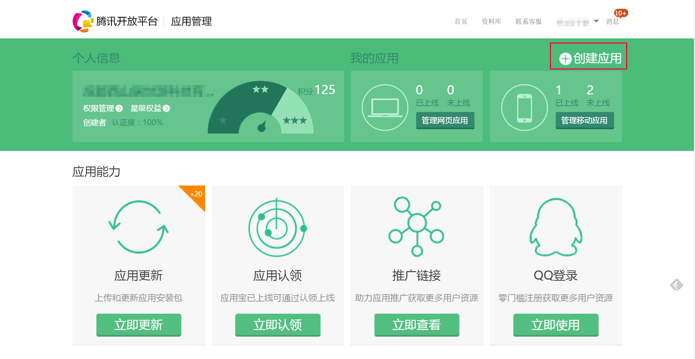
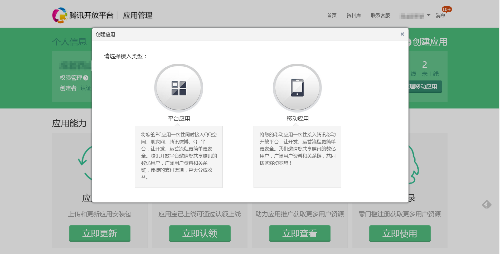
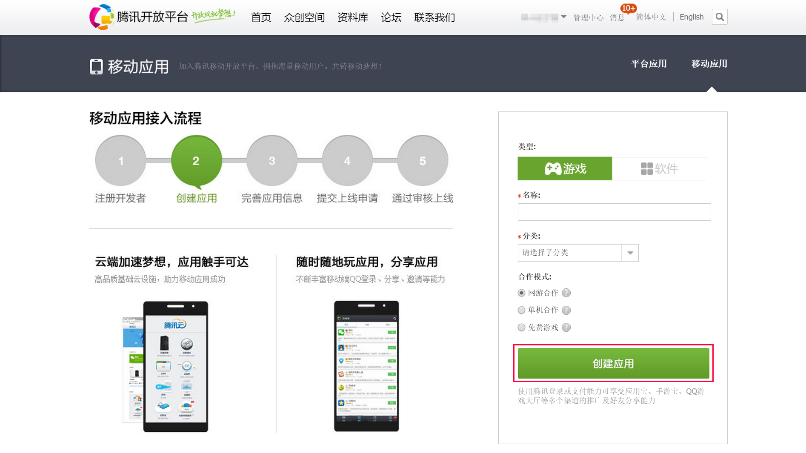
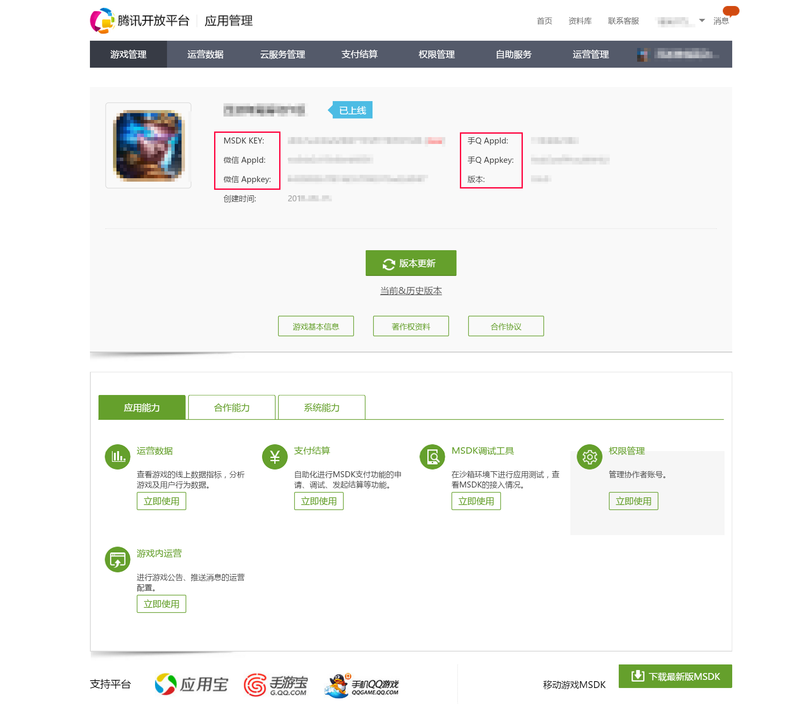

应用宝官方后台地址：http://open.qq.com/
西瓜SDK所需的参数 AppId、Appkey、密钥 均在应用宝后台获取。
获取参数步骤： 1. 注册开发者账号；
2. 登录应用宝渠道后台，点击“管理中心”，进入该页面，然后点击“创建应用”；

3. 选择应用类型，填写游戏名称，选择分类和合作模式，点击“创建应用”；


4. 获取MSDK KEY、AppId、Appkey，可在“游戏管理”中查看参数；

5. 腾讯开发者平台，应用宝和网页的所有应用全部迁移到了这个平台。